Você sabia?
Fotossíntese e Quimiossíntese
Fotossíntese
As plantas, as algas e algumas bactérias conseguem produzir seu próprio alimento, através de um processo chamado fotossíntese. Para que isso seja possível estes seres vivos precisam de duas coisas básicas: A clorofila que é a responsável ela coloração esverdeada e luz solar.

Durante a fotossíntese ocorre a captação do gás carbônico da atmosfera (CO²) e da água (H2O) absorvida pelas raízes das plantas e que posteriormente passa por todos os órgãos (tronco, galhos, folhas, flores e por fim o seu fruto). Esta é a primeira etapa do processo.
Quando a água chega nas folhas começa então a transformação do (CO²) gás carbônico e água (H2O) em: oxigênio (O2) e glicose (C6H12O6).

A glicose é um tipo de açúcar que fornece energia a planta. O Oxigênio não é mais necessário para as plantas então elas o liberam na atmosfera, onde este tem função importante para a sobrevivência de outros seres vivos como nós.
Quimiossíntese
O processo de quimiossíntese ou como também é conhecida "fotossíntese bacteriana" ou “fase escura da fotossíntese” se assemelha a fotossíntese, entretanto não se utiliza da luz solar, a energia utilizada provém de reações químicas de substâncias minerais.
A quimiossíntese é feita em duas fases sendo constituídas em:


Fase 1: Durante esta fase ocorre uma ação que envolve o nitrito (HNO2) + Oxigênio (O2), que produz o Nitrato (NO3-) liberando o Hidrogênio (H) e o oxigênio (O2) desprendendo energia química, que será utilizada para realizar a quimiossíntese e a produção de matéria orgânica.

Fase 2: A segunda etapa pode ser entendida pela seguinte equação: O gás carbônico (CO2) + água H2O + Energia Química resultando em → Compostos Orgânicos + Oxigênio O2.

Raiz
A raiz das plantas é o órgão responsável pela sustentação e fixação no solo ou onde ela esteja inserida, a maior parte ficam em áreas subterrâneas onde acessam os lenções freáticos, mas existem ainda aquelas que ficam submersas diretamente na água como a vitória régia, ou até mesmo com porções aéreas (fora do solo) como as plantas do manguezal.
As raízes possuem também a função de absorção da água e nutrientes. Na ponta das raízes existe uma estrutura denominada coifa, esta estrutura serve como uma espécie de capacete natural para a raízes protegendo e permitindo o crescimento e penetração no solo sem danos.
Ao longo de sua estrutura elas possuem pelos absorventes, estes auxiliam na sucção da água e de nutrientes. Constituída por um ramo principal, desta se originam os ramos laterais, eles são mais finos, sendo classificados como axial ou pivotante.
Quando as raízes são originadas diretamente do caule e todas tem a mesma espessura ou semelhante elas são denominadas de raízes do tipo fasciculado.
Tipos de raízes
Raízes aéreas: São consideradas raízes aéreas aquelas que possuem múltiplas funções além de sustentação auxiliar na respiração da planta na obtenção do gás oxigênio (O2) como as plantas de mangue, consideradas raízes respiratórias.
Raízes sugadoras: São consideradas raízes sugadoras aquelas que se provém dos nutrientes vindos de outra planta, como o cipó de chumbo.
Raízes-suporte: São consideradas raízes-suporte aquelas que auxiliam diretamente na sustentação da planta, como as plantas do mangue.
Raízes tuberosas: São consideradas raízes tuberosas, aquelas que armazenam nutrientes em seu interior para serem utilizados em tempos de seca ou muito frio, como a batata.
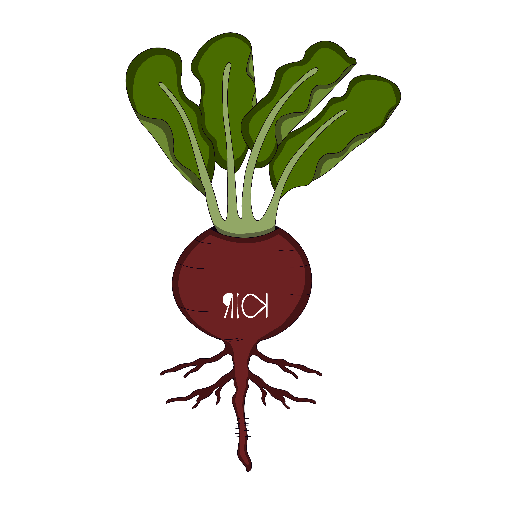Raízes tabulares: São consideradas raízes tabulares aquelas que se encontram perpendiculares ao solo, seguindo o mesmo fluxo do tronco, auxiliando no seu crescimento.
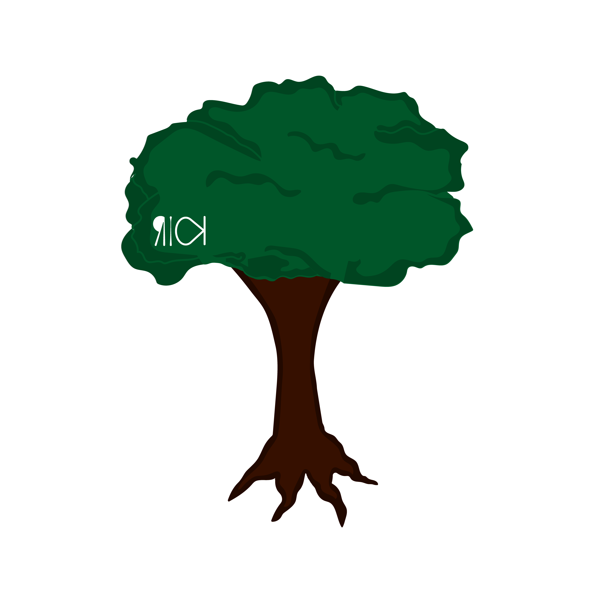Raízes aquáticas: São consideradas raízes aquáticas, as que ficam completamente submergidas em baixo d’água, como a vitória-régia.
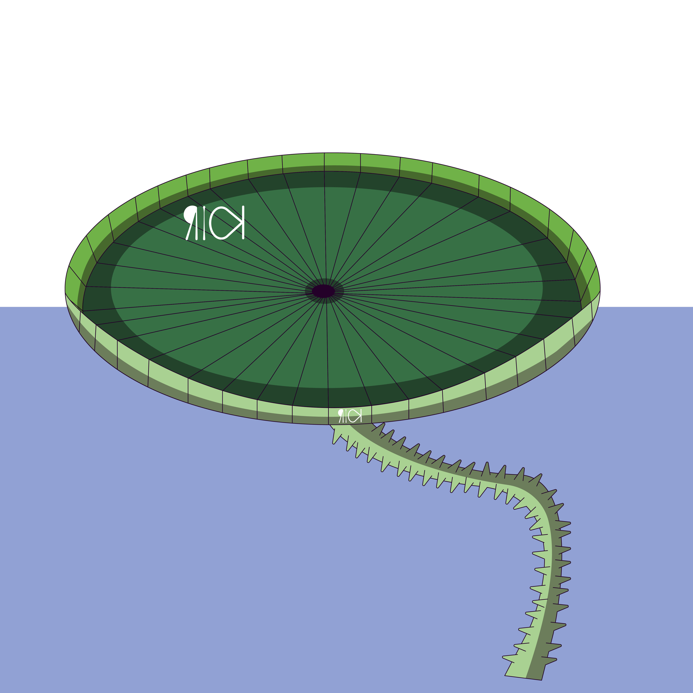Caule
O caule é uma estrutura onde são desenvolvidas e apoiadas todas as folhas e seus ramos. A sua principal função é de transporte de seiva, fazendo com que ela passe por todos os órgãos e estruturas da planta, além do armazenamento da água e das substâncias nutritivas.
Na maioria dos casos o caule é aéreo, ficando acima do solo ou do substrato onde ele está fixado, mas também podemos encontra-los submersos em água como é o caso da vitória-régia.

Os caules possuem áreas de crescimento, denominados gemas. As gemas são áreas específicas que podemos encontrar em todo o caule, elas dão origem a novos ramos, folhas e flores.
As gemas localizadas no topo do caule são chamadas gemas apicais, já as localizadas nas regiões mais centrais ou intermediarias são conhecidas como gemas laterais. Nas regiões laterais que possuem uma ou mais gemas laterais são denominados de nó.
O caule também é responsável pela água e nutrientes que passam por todos os órgãos e estruturas presentes nas plantas, o nome dado para estes líquidos é seiva, podendo ser denominada seiva bruta ou elaborada.
A seiva bruta, é proveniente das raízes e contém água e sais minerais, sendo utilizada posteriormente pelas folhas no processo da fotossíntese, formando assim os açúcares.
Após a fotossíntese é criada uma nova seiva, esta por sua vez é denominada de seiva elaborada
Tipos de caules:
Troncos: São considerados troncos, caules que possuem matéria orgânica morta recobrindo-o, este apresenta muitos ramos e podem atingir vários metros de altura, como a macieira.
Hastes: São considerados hastes, os caules finos, que em sua grande maioria possuem a coloração esverdeada, sendo encontrada em plantas de pequeno porte, como o pé de couve e o pé de soja.
Colmos: São considerados colmes, os caules de formato cilíndrico que apresenta nós bem visualizados, como a cana-de-açúcar e o bambu.
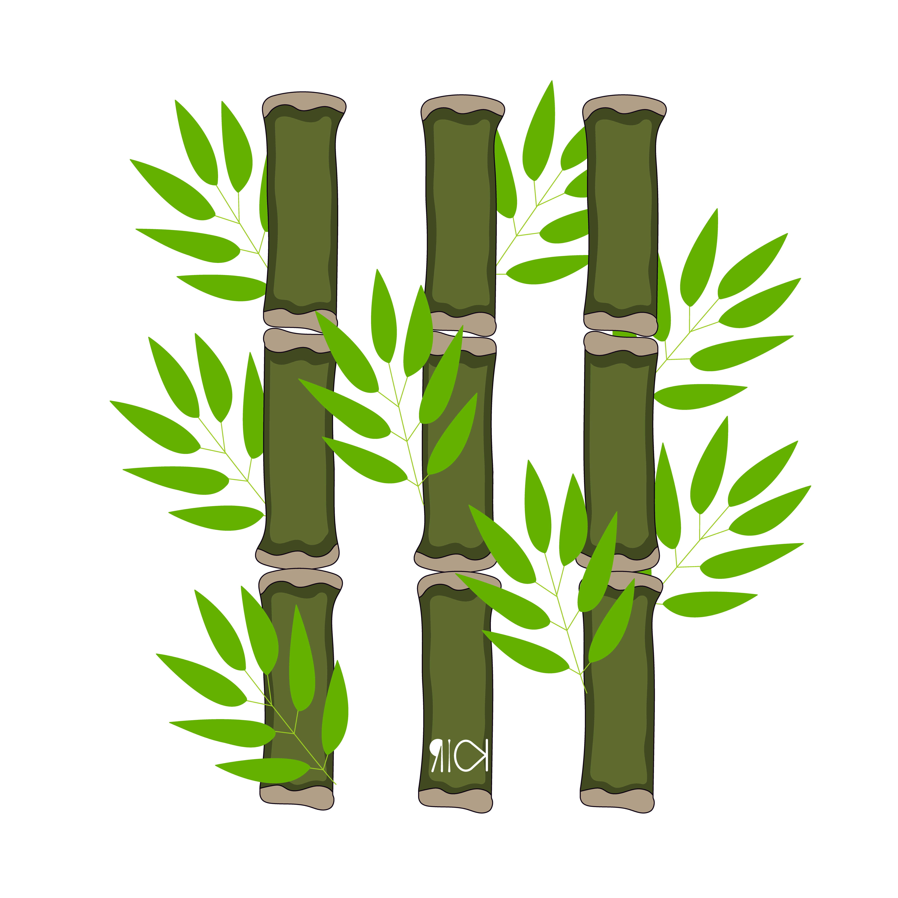Estipes: São considerados estipes caules longos e resistentes, porém sem ramificações como as palmeiras.
Cladódios: São considerados cladódios, os caules que podem armazenar grande quantidade de água em seu interior, e possuem coloração esverdeada, além fazer a fotossíntese, como os cactos.
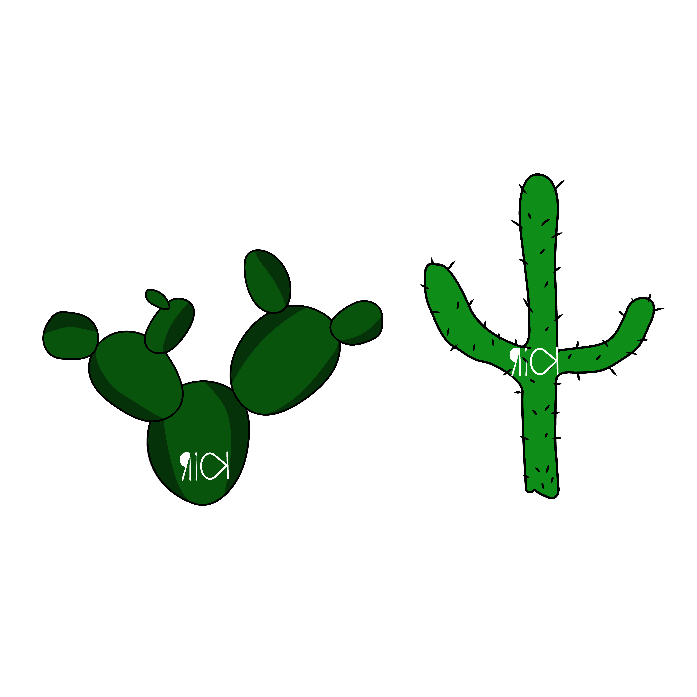Caules rastejantes: São considerados rastejantes, os caules que crescem paralelamente à superfície do solo, como a abobreira.
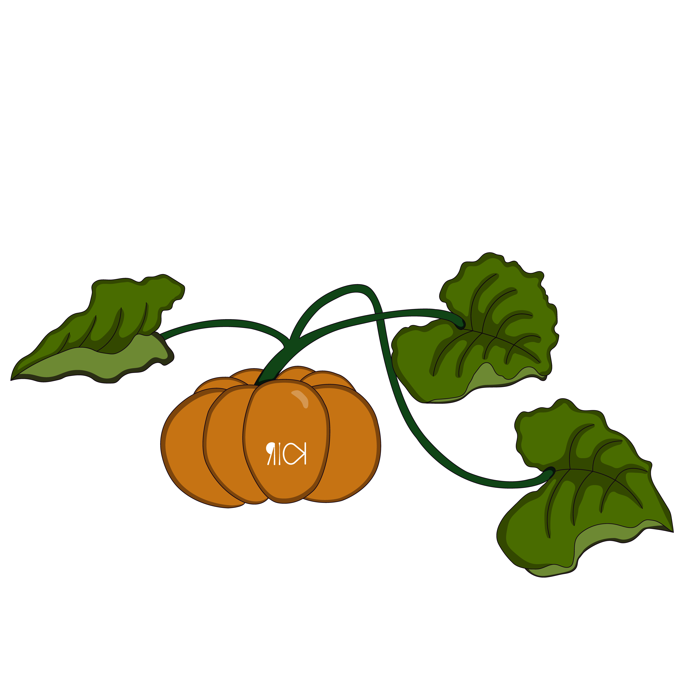Caules trepadores: São considerados caules trepadores, aqueles que crescem apoiados em alguma superfície, como as videiras.
Folhas
As folhas são estruturas de suma importância para a maioria das espécies de plantas, dentre suas funções, podemos destacar a fotossíntese, a respiração e a transpiração.
Ao longo da evolução, foram desenvolvidos diversos formatos de folhas de acordo com as condições ambientais de cada local.
As folhas apresentam normalmente os seguintes componentes: pecíolo, na maior parte dos casos ele possui a função de unir a região da folha ao caule. Limbo, é a maior parte da folha, onde estão inseridas as nervuras, elas correspondem aos vasos condutores de seiva nas plantas, ou seja, a xilema e o floema, em alguns casos estas nervuras podem formar uma rede de ligações aleatórias em outras são paralelas.
As plantas, assim como nos humanos também possuem um sistema de regulação de temperatura através da transpiração. A transpiração consiste na perca d’água na forma de vapor, ocorrendo através do limbo da folha.
Neste local existem poros chamados de estômatos, componentes microscópicos, que permitem as trocas gasosas da planta assim como a saída da água em forma de vapor. Cerca de 90% das trocas gasosas ocorrem através dos estômatos, sendo em grande parte encontrados no limbo, caules e em outros órgãos.
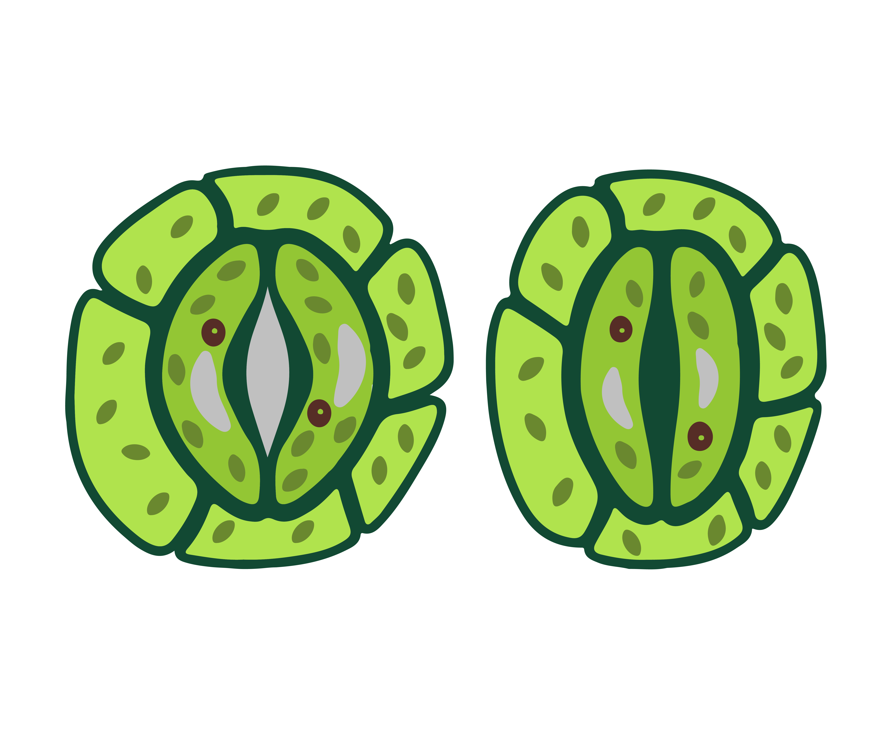A abertura dos estômatos permite que a água que está nas raízes possa subir até as partes mais elevadas da planta, entretanto, essa abertura faz com que a planta também perca uma certa quantidade de água no seu interior, mas a planta pode controlar a abertura de estômatos, em épocas de seca é inevitável este controle, entretanto a fotossíntese favorece a abertura dos estômatos com finalidade de captação de gás carbônico CO².
Á noite, com a ausência da luz solar os estômatos permanecem fechados e a planta evita a perca desnecessária de água.
Além do processo de transpiração que acarreta perca da água da planta, também existe o processo de gutação, este processo ocorre, quando o ar se encontra com bastante umidade ou o solo encharcado, fazendo com que a água seja eliminada espontaneamente.
Esse processo é mais comum em plantas de pequeno porte como o morangueiro e algumas espécies de suculentas.
Diversidade das folhas
As folhas ao longo do processo evolutivo passaram por grandes adaptações de acordo com o local que estão inseridas, assim, justificando a grande variedade de formas, cores e tamanhos.
Plantas que ficavam situadas em ambientes mais planos, consecutivamente possuem mais disponibilidade de luz solar, esta por sua vez exige que os estômatos se abram mais vezes, assim fazendo com que aconteça uma perca maior de água para melhor captação de gás carbônico (CO²), estas plantas são majoritariamente encontradas em ambientes tropicais que possuem grande quantidade de água disponível.
Já as plantas que se encontram em locais com pouca luz solar, são as famosas plantas de sombra, elas possuem folhas maiores para facilitar o alcance dos raios solares, ou buscam outros tipos de fonte de alimento como é o caso da quimiossíntese, (as plantas de folhas avermelhadas).
Certas espécies de plantas podem apresentar adaptações em seu formato, como os cactos que suas folhas são os espinhos, assim auxiliando na contenção da água em seu interior.
As gavinhas presentes no pé de maracujá, possuem modificações nas suas folhas e caules que possuem aspectos de fios enrolados que proporciona a planta uma melhor fixação.
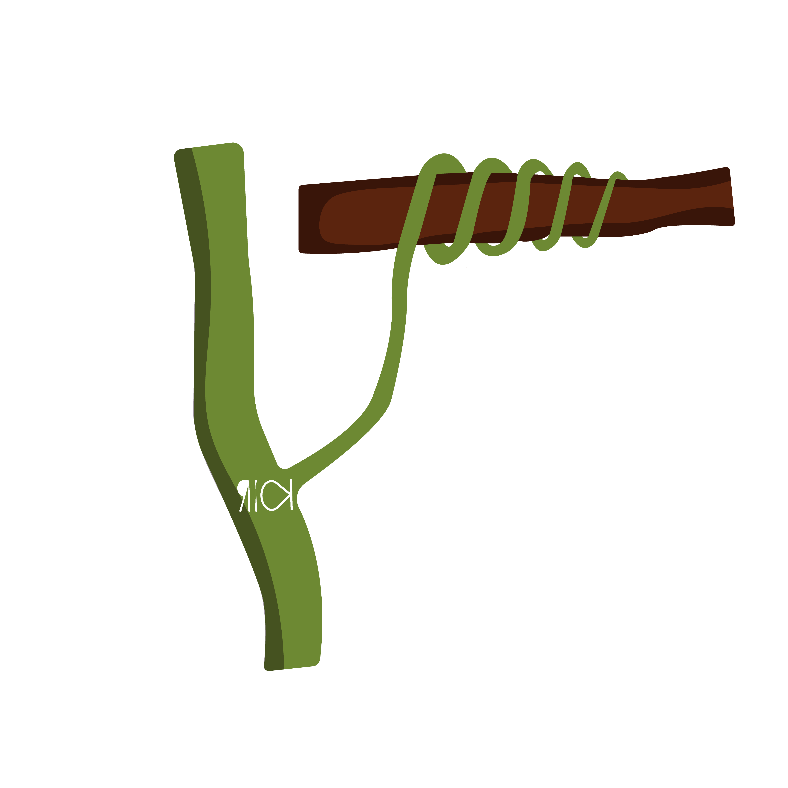As brácteas são estruturas que visam à atração, possuem cores fortes e atraem possíveis polinizadores, assim como o antúrio.
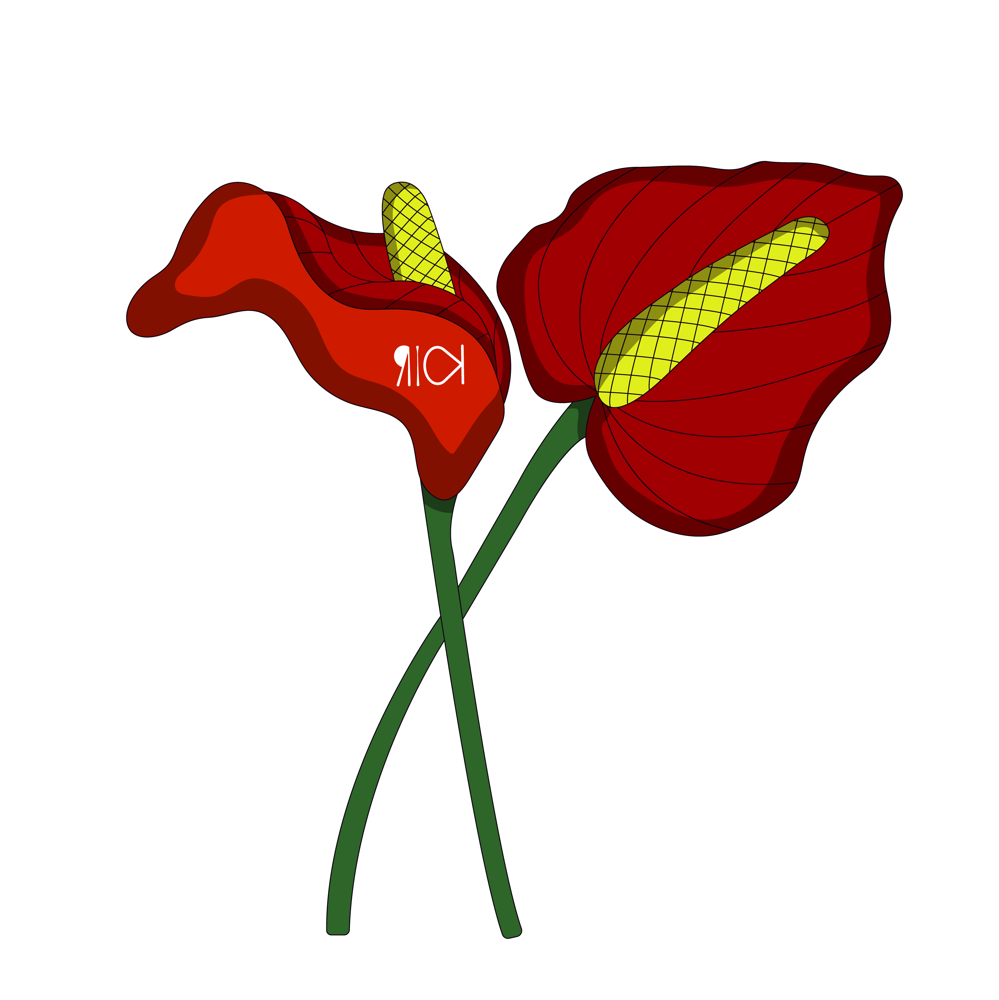As folhas especializadas em captura de presas, são encontradas somente nas famosas plantas carnívoras, essas folhas são capazes de atrair, aprisionar e digerir animais de pequeno porte.
Flor
As flores são os órgãos reprodutores das plantas angiospermas. Plantas que possuem este tipo de artifício são as mais evoluídas em questões reprodutivas, pois passaram a contar com órgãos mais especializados e complexos.
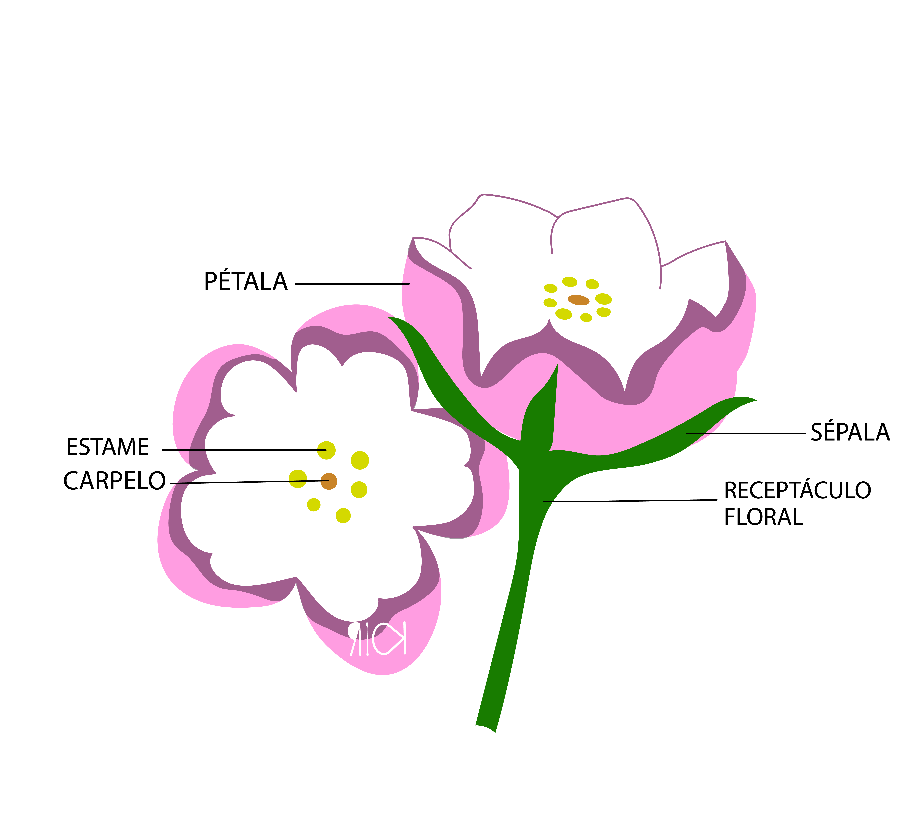As flores possuem partes férteis e estéreis, todas as estruturas se originam de folhas modificadas. Os estames e os carpelos são as partes diretamente ligadas a reprodução. Já o cálice e a corola são as partes estéreis, ambas são de extrema importância para atrair os seus polinizadores, através de sua coloração e odor.
Para uma flor ser considerada completa ela precisa ter as quatro estruturas, porém diante da grande diversidade de plantas existem flores que não possuem uma ou até mais destas estruturas destacadas.
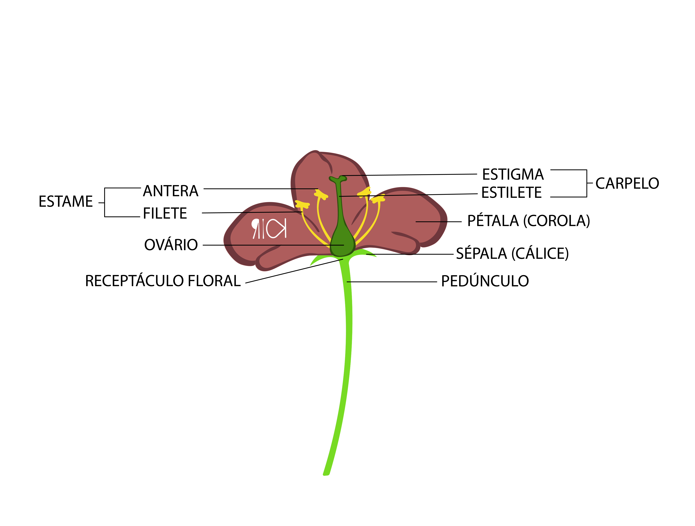O cálice é formado por pequenas folhas modificas denominadas de sépalas. Já a corola é formada por folhas modificadas chamadas de pétalas, estas normalmente têm sua coloração e texturas diferentes das folhas da planta.
A parte feminina da flor é chamada de carpelo, e seu coletivo e chamado de gineceu. A porção masculina é chamada de estame e seu conjunto é chamado de androceu.
As plantas em sua grande maioria são hermafroditas, ou seja, possuem o carpelo e os estames na mesma flor, entretanto isso não é via de regra, algumas flores possuem apenas uma das duas partes.
Inflorescência é a parte da planta onde se localizam as flores, caracterizada pela forma como as das imagens, se dispõem umas em relação às outras. Normalmente consiste em um prolongamento semelhante ao caule, ou raque, provido de folhas modificadas chamadas brácteas.
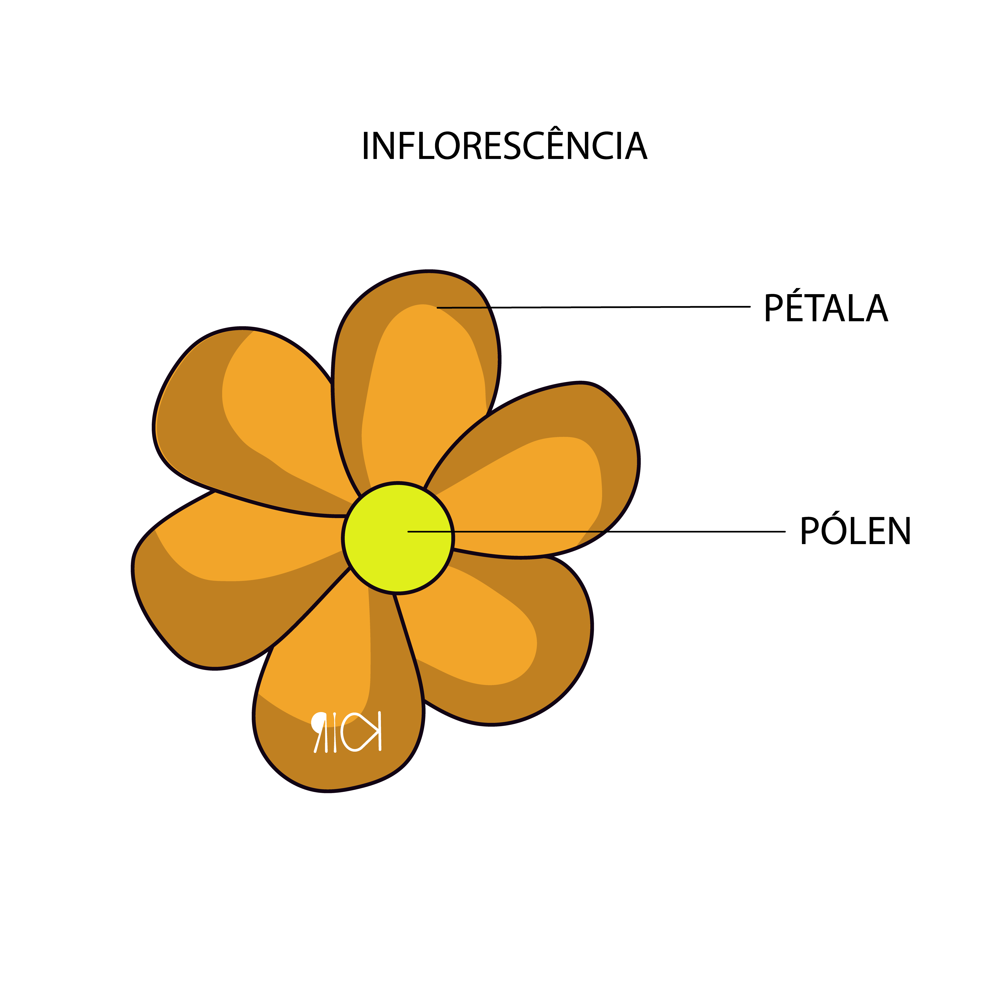Polinização
A polinização é uma das formas de reprodução das plantas (é considerada sexuada, pois existe a troca de material genético.) A polinização pode ocorrer com o auxílio dos ventos, da água e também de agentes polinizadores.
A polinização por agentes naturais como a água e o vento são os mais difíceis, pois dependem intrinsicamente do acaso, com a participação do clima, da região e outros fatores.
As plantas desenvolveram diferentes adaptações para que a flor possa ser fecundada, elas estão diretamente ligadas à planta, como: A produção do pólen, dos strong>estames e do carpelo.
Quando a planta não depende apenas dos fatores naturais, ela precisa de um polinizador (animal), este se sente atraído por sua coloração ou odor.
O néctar que é uma substancia açucarada também atraí alguns animais, assim fazendo com que o pólen fique preso e seja mais facilmente dispersado para possivelmente fecundar outra flor. Exemplo do Beija-Flor.
As flores estão adaptadas para seus agentes polinizadores, as que são polinizadas pelo vento geralmente são pequenas e possuem cores mais pálidas, sem odor tampouco néctar.
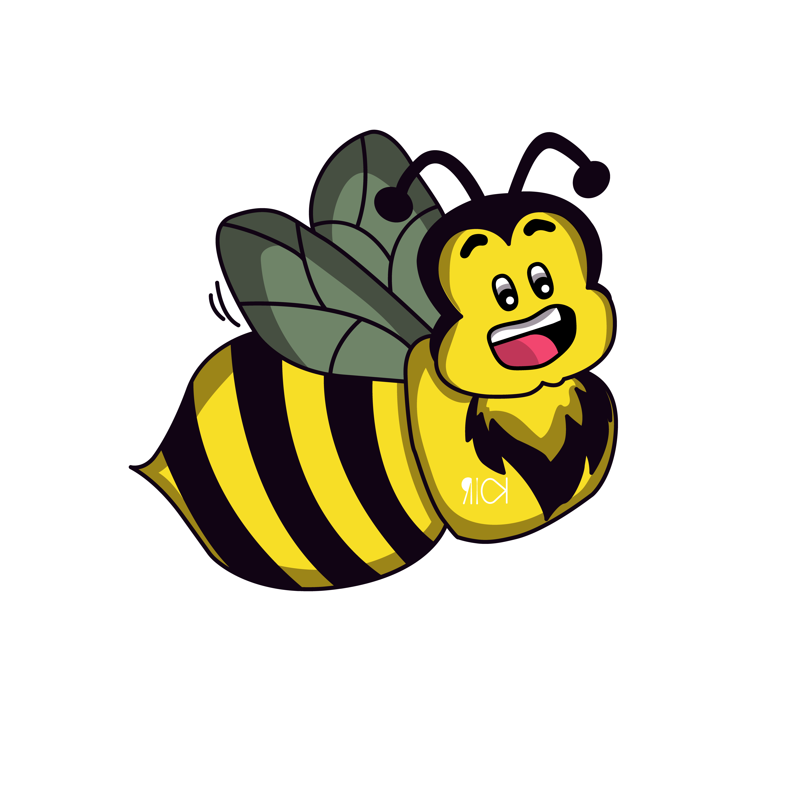Já as flores polinizadas por mariposas e morcegos, possuem forte odor e coloração pálida, por se tratarem de animais de hábitos noturnos elas são facilmente localizadas.
As plantas que possuem flores voltadas a polinizadores diurnos como as abelhas e borboletas, possuem cores mais vibrantes e aromáticas além de formas peculiares como as orquídeas.
Após o processo de polinização, inicia-se então a fecundação das flores. Os grãos de pólen que alcançam o estigma da mesma espécie, se transformam em um tubo que se prolonga do estigma até o ovário.
A partir dos grãos de pólen se formam os gametas masculinos, assim, após fecundado dará origem ao fruto da planta.
Sementes
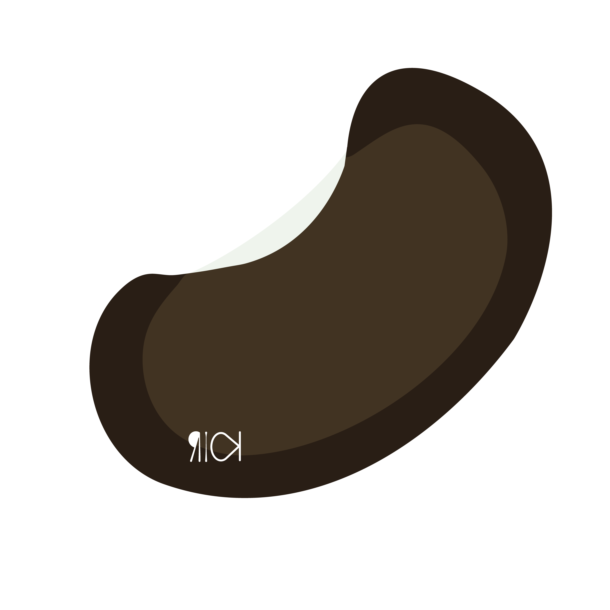A semente é o resultado do desenvolvimento do óvulo fecundado, através da polinização das flores, ela é formada pelo embrião que possui uma reserva nutritiva e é envolta em uma casca que é responsável por sua proteção.
A casca é a parte externa e protege a semente até a sua germinação, dependendo da espécie ela pode ser mais rígida ou permeável.
Durante o processo de dormência a semente se mantém estável, até que possua o estímulo externo necessário para quebrar o seu adormecimento dando início ao ciclo de germinação originando assim, uma nova planta.
Em seus primeiros estágios ela usa a reserva nutritiva para garantir a energia necessária do processo de germinação até que possua tamanho suficiente para fixar-se ao solo e captar a luz solar, água e nutrientes.
A germinação da semente depende de uma série de condições ambientais favoráveis, como: temperatura, local, oferta de água, oxigênio e luminosidade, estes são fatores que permitem a quebra da dormência inicial.
A maioria das sementes possuem pouca ou nenhuma água em seu interior, assim, impossibilitando qualquer atividade celular, entretanto, caso ela esteja em um ambiente com muita oferta de água, isso acaba dificultando a absolvição de oxigênio (O2).
Para a germinação da maioria das sementes é necessária uma temperatura ambiente acima de 5°C e abaixo de 45°C, sendo a faixa ideal 25°C à 30°C.
Algumas, mesmo em condições ideias, por não terem passado pela quebra da dormência podem permanecer por longos períodos sem nenhuma atividade, sem afetar no seu processo de germinação futura.
Dispersão das sementes
A dispersão das sementes pode ser dada de inúmeras maneiras, através do ar, como o dente de leão, da água, como as sementes das árvores do manguezal, e por meio de animais.
As sementes podem variar tamanho, cor, textura e tudo isso é definido conforme o processo de adaptação de cada planta.
Dentre as cores mais fortes podemos destacar as vermelhas e amarelas, que são facilmente visualizadas pelos animais, assim, os induzindo ao consumo, e desta maneira sendo liberadas pelas fezes que são distribuídas em locais distantes, longe da planta mãe para que não haja competição entre elas.
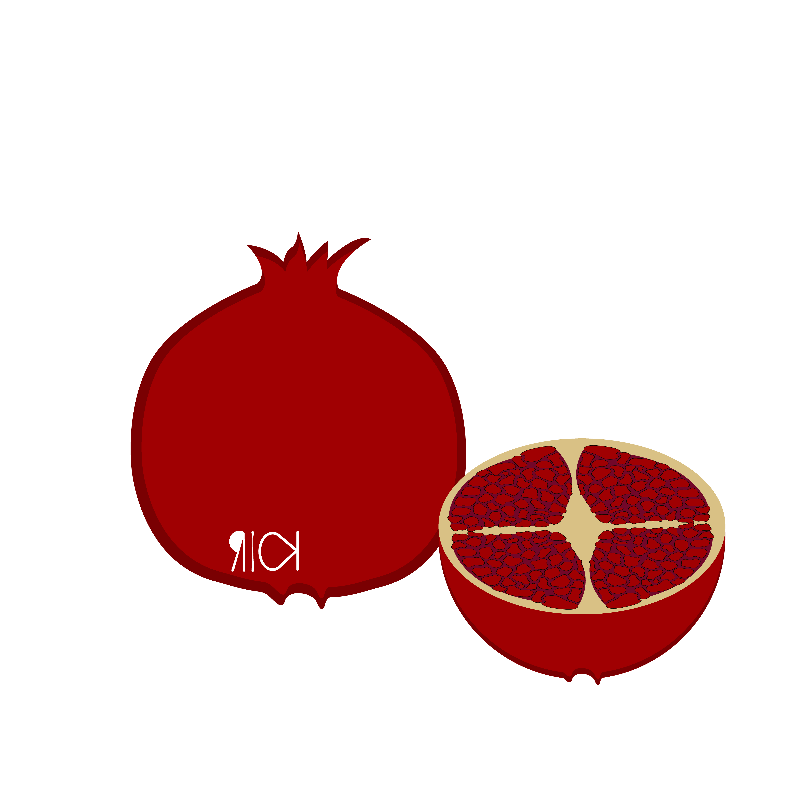Existem também sementes que possuem espinhos e outras pequenos pelos como o carrapicho, por serem sementes de plantas rasteiras, os animais ruminantes como a vaca ou até mesmo o lobo-guará quando se encostam as levam presas em seus pelos e são dispersadas a longas distâncias.
Germinação
A germinação é o início do ciclo de vida de uma planta, tudo se inicia com a semente, que é uma espécie de capsula protetora para inúmeros nutrientes, que a auxilia na fixação junto ao solo.
Existem diferentes tipos de sementes no mundo, e graças a grande biodiversidade existente no mundo cada uma delas possui sua própria maneira de encontrar o local ideal para a germinação.
Algumas sementes possuem uma casca mais rígida e cores chamativas para atrair animais para sua dispersão, como exemplo o milho que mesmo passando pelo trato digestivo de algumas aves como o pombo ele sai intacto, fato é que para que a quebra da dormência ocorra, uma película protetora precisa ser rompida para que a semente “acorde” e dê início ao seu processo de germinação.
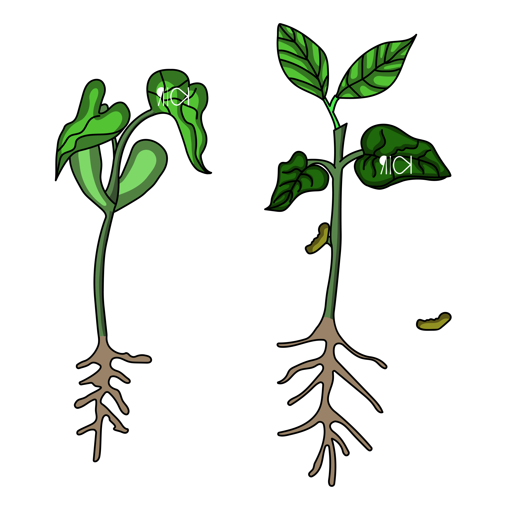Já o feijão por sua vez, só sai do processo de dormência quando entra em um local úmido o suficiente para que ele possa dar início a sua fixação no solo, assim, também existem plantas como as encontradas no bioma Cerrado que precisam passar por um estresse térmico para quebra de sua dormência e início da germinação.
Fases da Germinação do Feijão

A germinação passa por um longo processo embrionário, este consiste em algumas etapas aqui destacadas.
Na figura 1, pode-se observar que a semente do feijão se encontra abaixo do solo, assim como parte inicial do seu processo germinativo começa a absorver a água que se encontra disponível no local.
O primeiro registro da germinação se dá na figura 2, nela podemos observar que é lançado ao solo os primeiros registros de suas futuras raízes que ainda são pequenas e finas.
A energia armazenada na semente é ativada, ocasionando o aumento da respiração das células vegetais e sua duplicação. Assim, fazendo com que a semente comece a se moldar a futura planta dando início ao caule, ganhando mais tamanho e emergindo do solo, mas ainda sem registro de folhas como visto na figura 3.
Na figura 4, pode-se perceber que se deu início as folhas iniciais, estas encontram-se dentro das partes restantes da semente que ainda a acompanha.
Na figura 5 o crescimento da planta está bem desenvolvido, este é um dos estágios finais da germinação onde as folhas já possuem um tamanho considerável, assim como suas raízes e caule.
Na figura 6 a semente já tem dissipado toda sua energia armazenada, assim finalizando o processo de germinação e crescimento inicial da planta, agora ela depende exclusivamente da fotossíntese para obtenção de energia e alimento para que assim possa concluir seu ciclo de vida.
Frutos
O fruto nada mais é que o desenvolvimento do ovário da planta, estes por sua vez possuem sementes (embrião fecundado) em seu interior
A principal função do fruto é de proteger as sementes, assim como também facilitar a sua dispersão, eles são compostos por um acumulo de substancias nutritivas, assim como um envoltório rígido externo, como a maçã.

As pleuras, isolam e protegem o pulmão do contato direto com os ossos do corpo humano, assim prevenindo de futuros problemas e danificações pelo atrito nos movimentos de inspiração e expiração. Esses movimentos involuntários produzidos são auxiliados pelo músculo diafragma.
Diversidade dos Frutos
Frutos Carnosos: Estes frutos apresentam um corpo macio e suculento, na sua grande maioria serem como atrativos para os agentes polinizadores, são doces e nutritivos, como a uva e a pera.
Frutos Secos: Estes frutos não apresentam polpa, tampouco são macios ou suculentos, são rígidos e não possuem água em seu interior, na sua grande maioria não são comestíveis, porém contém fibra como a bajem feijão e o amendoim.
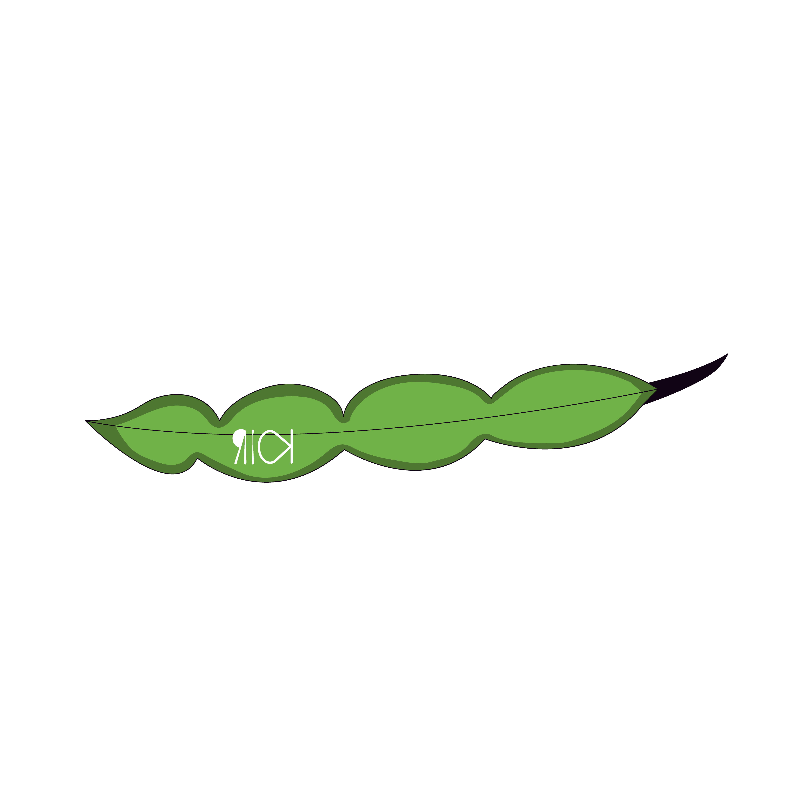Frutos sem sementes: Os frutos sem sementes são aqueles que as flores não foram fecundadas, assim não gerando a semente (embrião), sendo muito comum à banana.
Frutos Falsos ou Pseudofrutos: Em algumas plantas as flores também passam por um processo de desenvolvimento, fazendo com que surjam os frutos falsos, estes por sua vez também possuem função de dispersão das sementes.
Ao contrário do que muitas pessoas pensam, o caju não é um fruto verdadeiro pelo fato de não ter sido formado pelo ovário. O fruto do caju é a castanha e não a parte macia e suculenta.